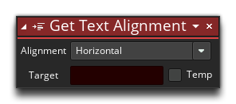
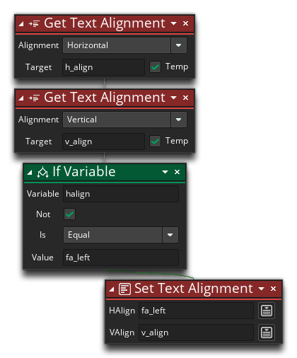

Descripción
Esta acción obtendrá la alineación de la fuente para todas las acciones de texto de dibujo actuales. Puede elegir si desea recuperar la alineación horizontal o vertical para verificar, y la acción devolverá uno de los siguientes valores constantes, que representan un tipo diferente de alineación horizontal o vertical:
El texto está alineado horizontalmente hacia la izquierda. El texto está alineado horizontalmente al centro. El texto está alineado horizontalmente a la derecha. El texto está alineado verticalmente con la parte superior. El texto está alineado verticalmente con el medio El texto está alineado verticalmente con la parte inferior.


Sintaxis de acción:
Ejemplo:
El código de bloque de acción anterior verifica la alineación del texto horizontal y si no está configurado para fa_left, entonces se establece en ese valor..